Spider-Man and Zoids (1986 - 1987)
| Comic Book | Release Date | Cover |
|---|---|---|
| Spider-Man and Zoids #1 Zoids | 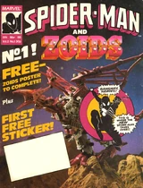 | |
| Spider-Man and Zoids #2 Zoids | 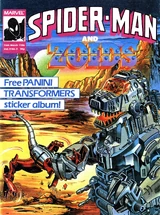 | |
| Spider-Man and Zoids #3 Zoids | 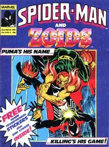 | |
| Spider-Man and Zoids #4 Zoids | ||
| Spider-Man and Zoids #5 Zoids | 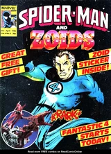 | |
| Spider-Man and Zoids #6 Zoids | ||
| Spider-Man and Zoids #7 Zoids | 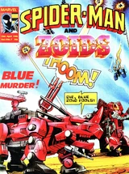 | |
| Spider-Man and Zoids #8 Zoids | 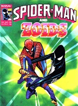 | |
| Spider-Man and Zoids #9 Zoids | ||
| Spider-Man and Zoids #10 Zoids | 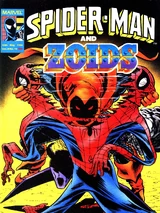 | |
| Spider-Man and Zoids #11 Zoids | ||
| Spider-Man and Zoids #12 Zoids | 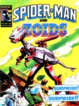 | |
| Spider-Man and Zoids #13 Zoids | 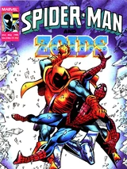 | |
| Spider-Man and Zoids #14 Zoids | 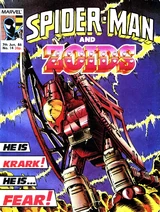 | |
| Spider-Man and Zoids #15 Zoids | ||
| Spider-Man and Zoids #16 Zoids | ||
| Spider-Man and Zoids #17 Zoids | 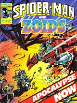 | |
| Spider-Man and Zoids #18 Zoids | 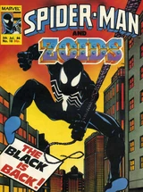 | |
| Spider-Man and Zoids #19 Zoids | 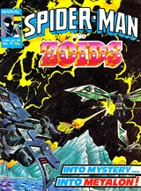 | |
| Spider-Man and Zoids #20 Zoids | 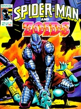 | |
| Spider-Man and Zoids #21 Zoids | ||
| Spider-Man and Zoids #22 Zoids | ||
| Spider-Man and Zoids #23 Zoids | ||
| Spider-Man and Zoids #24 Zoids | 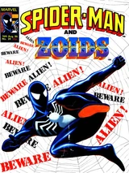 | |
| Spider-Man and Zoids #25 Zoids | 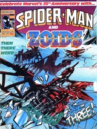 | |
| Spider-Man and Zoids #26 Zoids | 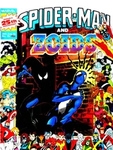 | |
| Spider-Man and Zoids #27 Zoids | ||
| Spider-Man and Zoids #28 Zoids | 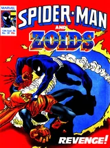 | |
| Spider-Man and Zoids #29 Zoids | ||
| Spider-Man and Zoids #30 Deserts Part 1 | 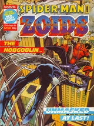 | |
| Spider-Man and Zoids #31 Deserts Part 2 | ||
| Spider-Man and Zoids #32 All Our Yesterdays Part 1 | 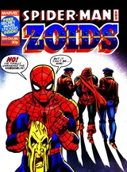 | |
| Spider-Man and Zoids #33 All Our Yesterdays Part 2 | ||
| Spider-Man and Zoids #34 All Our Yesterdays Part 3 | ||
| Spider-Man and Zoids #35 All Our Yesterdays Part 4 | ||
| Spider-Man and Zoids #36 Bits and Pieces Part 1 | 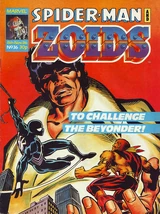 | |
| Spider-Man and Zoids #37 Bits and Pieces Part 2 | ||
| Spider-Man and Zoids #38 Last of the Hellrunners Part 1 | ||
| Spider-Man and Zoids #39 Last of the Hellrunners Part 2 | ||
| Spider-Man and Zoids #40 The Black Zoid Part 1 | 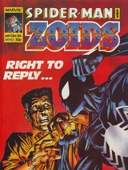 | |
| Spider-Man and Zoids #41 The Black Zoid Part 2 | 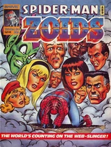 | |
| Spider-Man and Zoids #42 The Black Zoid Part 3 | ||
| Spider-Man and Zoids #43 The Black Zoid Part 4 | 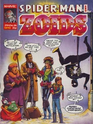 | |
| Spider-Man and Zoids #44 The Black Zoid Part 5 | ||
| Spider-Man and Zoids #45 The Black Zoid Part 6 | 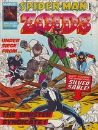 | |
| Spider-Man and Zoids #46 The Black Zoid Part 7 | 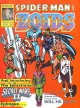 | |
| Spider-Man and Zoids #47 Orientation | 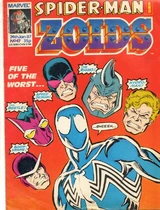 | |
| Spider-Man and Zoids #48 Out of the Blue | ||
| Spider-Man and Zoids #49 Blue Moon, Red Dawn | 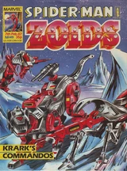 | |
| Spider-Man and Zoids #50 Schumacher's Story | ||
| Spider-Man and Zoids #51 Getting Even | 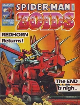 |